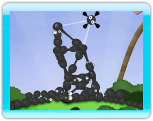

7 |
Déroulement du jeu |
 |

L'objectif de chaque niveau est d'introduire
un maximum de boules de Goo dans le tuyau. Attrape et dépose les boules de Goo pour construire des tours, ponts, zeppelins, langues géantes, et d'autres structures assemblées avec amour. Fais attention, la manipulation de la Goo peut s'avérer inextricable si tu n'as pas établi de solides bases de goo et d'apprentissage. Pour attraper une balle de Goo, place le curseur sur la boule de Goo choisie, et attrape-la avec le . Déplace la balle de Goo où tu veux, et lâche-la. Pour connecter une balle de Goo à la structure, attrape la balle de Goo, déplace-la à proximité de la structure, et lâche-la. La balle de Goo s'accroche automatiquement aux autres. De cette manière, tu peux construire toutes les structures imaginables, d'une simplicité magnifique à une incroyable complexité. N'oublie pas que tu as devant toi tout un monde à découvrir. L'expérimentation et l'exploration font partie du jeu. Tu ne peux pas endommager le jeu ni le monde, alors laisse libre cours à ton imagination. Amuse-toi bien, cher ami ! |
 |
 |
 |